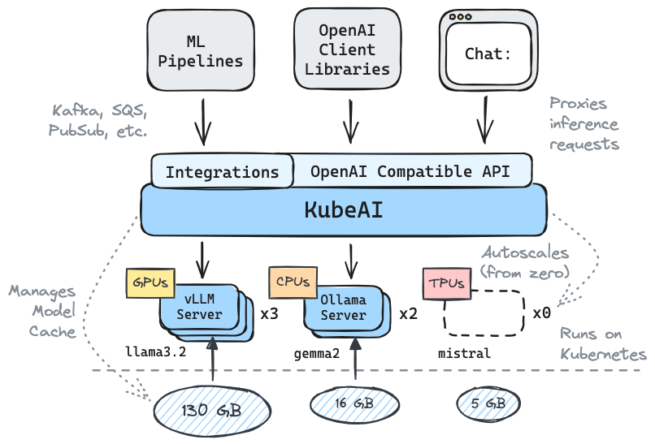

KubeAI: Private Open AI on Kubernetes¶
The simple AI platform that runs on Kubernetes.
"KubeAI is highly scalable, yet compact enough to fit on my old laptop." - Some Google Engineer
✅️ Drop-in replacement for OpenAI with API compatibility
🚀 Serve OSS LLMs on CPUs or GPUs
⚖️ Scale from zero, autoscale based on load
🛠️ Zero dependencies (no Istio, Knative, etc.)
🤖 Operates OSS model servers (vLLM and Ollama)
🔋 Additional OSS addons included (OpenWebUI i.e. ChatGPT UI)
✉️ Plug-n-play with cloud messaging systems (Kafka, PubSub, etc.)
Architecture¶
KubeAI serves an OpenAI compatible HTTP API. Admins can configure ML models via kind: Model Kubernetes Custom Resources. KubeAI can be thought of as a Model Operator (See Operator Pattern) that manages vLLM and Ollama servers.

Local Quickstart¶
Create a local cluster using kind or minikube.
TIP: If you are using Podman for kind...
Make sure your Podman machine can use up to 6G of memory (by default it is capped at 2G):# You might need to stop and remove the existing machine:
podman machine stop
podman machine rm
# Init and start a new machine:
podman machine init --memory 6144
podman machine start
kind create cluster # OR: minikube start
Add the KubeAI Helm repository.
helm repo add kubeai https://substratusai.github.io/kubeai/
helm repo update
Install KubeAI and wait for all components to be ready (may take a minute).
cat <<EOF > helm-values.yaml
models:
catalog:
gemma2-2b-cpu:
enabled: true
minReplicas: 1
qwen2-500m-cpu:
enabled: true
nomic-embed-text-cpu:
enabled: true
EOF
helm upgrade --install kubeai kubeai/kubeai \
-f ./helm-values.yaml \
--wait --timeout 10m
Before progressing to the next steps, start a watch on Pods in a standalone terminal to see how KubeAI deploys models.
kubectl get pods --watch
Interact with Gemma2¶
Because we set minReplicas: 1 for the Gemma model you should see a model Pod already coming up.
Start a local port-forward to the bundled chat UI.
kubectl port-forward svc/openwebui 8000:80
Now open your browser to localhost:8000 and select the Gemma model to start chatting with.
Scale up Qwen2 from Zero¶
If you go back to the browser and start a chat with Qwen2, you will notice that it will take a while to respond at first. This is because we set minReplicas: 0 for this model and KubeAI needs to spin up a new Pod (you can verify with kubectl get models -oyaml qwen2-500m-cpu).
NOTE: Autoscaling after initial scale-from-zero is not yet supported for the Ollama backend which we use in this local quickstart. KubeAI relies upon backend-specific metrics and the Ollama project has an open issue: https://github.com/ollama/ollama/issues/3144. To see autoscaling in action, checkout the GKE install guide which uses the vLLM backend and autoscales across GPU resources.
Supported Models¶
Any vLLM or Ollama model can be served by KubeAI. Some examples of popular models served on KubeAI include:
- Llama v3.1 (8B, 70B, 405B)
- Gemma2 (2B, 9B, 27B)
- Qwen2 (1.5B, 7B, 72B)
Documentation¶
Checkout our documenation on kubeai.org to find info on:
- Installing KubeAI in the cloud
- How to guides (e.g. how to manage models and resource profiles).
- Concepts (how the components of KubeAI work).
- How to contribute
OpenAI API Compatibility¶
# Implemented #
/v1/chat/completions
/v1/completions
/v1/embeddings
/v1/models
# Planned #
# /v1/assistants/*
# /v1/batches/*
# /v1/fine_tuning/*
# /v1/images/*
# /v1/vector_stores/*
Immediate Roadmap¶
- Model caching
- LoRA finetuning (compatible with OpenAI finetuning API)
- Image generation (compatible with OpenAI images API)
NOTE: KubeAI was born out of a project called Lingo which was a simple Kubernetes LLM proxy with basic autoscaling. We relaunched the project as KubeAI (late August 2024) and expanded the roadmap to what it is today.
🌟 Don't forget to drop us a star on GitHub and follow the repo to stay up to date!
Contact¶
Let us know about features you are interested in seeing or reach out with questions. Visit our Discord channel to join the discussion!
Or just reach out on LinkedIn if you want to connect: